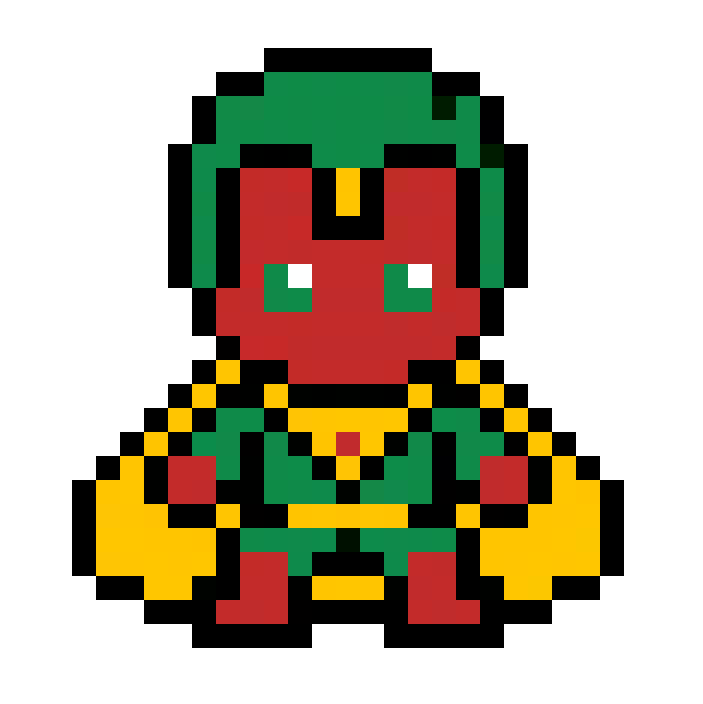

<!DOCTYPE html>
<html lang="en">
<head>
  <meta charset="UTF-8">
  <meta name="viewport" content="width=device-width, initial-scale=1.0">
  <title>ASYMPTOTIC NOTATIONS // [⬡] VISION — ALGO-VENGERS</title>
  
  <meta name="description" content="Design & Analysis of Algorithms: ASYMPTOTIC NOTATIONS. Mission 01: FOUNDATIONS.">
  <meta name="theme-color" content="#f8fafc">

  <!-- Google Fonts -->
  <link rel="preconnect" href="https://fonts.googleapis.com">
  <link rel="preconnect" href="https://fonts.gstatic.com" crossorigin>
  <link href="https://fonts.googleapis.com/css2?family=Chakra+Petch:wght@500;700&family=Plus+Jakarta+Sans:wght@400;500;600;700&family=Press+Start+2P&family=Silkscreen:wght@400;700&family=JetBrains+Mono:wght@400;600&display=swap" rel="stylesheet">

  <!-- KaTeX for beautiful math formulas -->
  <link rel="stylesheet" href="https://cdn.jsdelivr.net/npm/katex@0.16.9/dist/katex.min.css">
  <script defer src="https://cdn.jsdelivr.net/npm/katex@0.16.9/dist/katex.min.js"></script>
  <script defer src="https://cdn.jsdelivr.net/npm/katex@0.16.9/dist/contrib/auto-render.min.js"></script>

  <style>
    :root {
      --bg-main: #f8fafc;
      --border-dark: #0f172a;
      --text-main: #0f172a;
      --text-muted: #475569;
      --color-gold: #d97706;
      --color-cyan: #0284c7;
      --hero-accent: #059669;
      --badge-bg: #d1fae5;

      --font-pixel: 'Press Start 2P', monospace;
      --font-pixel-sub: 'Silkscreen', monospace;
      --font-body: 'Plus Jakarta Sans', system-ui, sans-serif;
      --font-code: 'JetBrains Mono', monospace;
      --top-bar-height: 32px;
      --nav-height: 72px;
      --container-max: 1100px;
    }

    *, *::before, *::after { box-sizing: border-box; margin: 0; padding: 0; }
    
    /* Pixelated retro mouse pointer */
    html, body {
      scroll-behavior: smooth;
      font-size: 16px;
      background-color: var(--bg-main);
      color: var(--text-main);
      font-family: var(--font-body);
      cursor: url("data:image/svg+xml,%3Csvg%20xmlns%3D%22http%3A//www.w3.org/2000/svg%22%20width%3D%2224%22%20height%3D%2224%22%20viewBox%3D%220%200%2024%2024%22%20shape-rendering%3D%22crispEdges%22%3E%20%3Cpath%20fill%3D%22%230f172a%22%20stroke%3D%22%23ffffff%22%20stroke-width%3D%221.5%22%20d%3D%22M2%202v18l5-5%204%208%203-1.5-4-8h6L2%202z%22/%3E%20%3C/svg%3E") 0 0, auto !important;
    }
    
    body {
      overflow-x: hidden;
      min-height: 100vh;
      line-height: 1.6;
      display: flex;
      flex-direction: column;
      background-color: var(--bg-main);
    }

    /* Native CSS Circular Hero Emblem Cursor on all interactive elements (ZERO TRAILING) */
    a, button, .pixel-btn, .topic-card, .mission-card, input, select, label, .top-progress-track-wrapper, .hero-speech-bubble, [role="button"], [data-hero-cursor], .quiz-opt-btn {
      cursor: url("data:image/svg+xml,%3Csvg%20xmlns%3D%22http%3A//www.w3.org/2000/svg%22%20width%3D%2232%22%20height%3D%2232%22%20viewBox%3D%220%200%2032%2032%22%20shape-rendering%3D%22crispEdges%22%3E%20%3Ccircle%20cx%3D%2216%22%20cy%3D%2216%22%20r%3D%2214%22%20fill%3D%22%23059669%22%20stroke%3D%22%23eab308%22%20stroke-width%3D%222%22/%3E%20%3Cpolygon%20points%3D%2216%2C8%2023%2C12%2023%2C20%2016%2C24%209%2C20%209%2C12%22%20fill%3D%22%230f172a%22%20stroke%3D%22%23eab308%22%20stroke-width%3D%221.5%22/%3E%20%3Cpolygon%20points%3D%2216%2C11%2020%2C13.5%2020%2C18.5%2016%2C21%2012%2C18.5%2012%2C13.5%22%20fill%3D%22%23facc15%22/%3E%20%3C/svg%3E") 16 16, pointer !important;
    }

    .cyber-grid-bg {
      position: fixed; top: 0; left: 0; width: 100%; height: 100%;
      background-image: linear-gradient(to right, rgba(15, 23, 42, 0.05) 1px, transparent 1px), linear-gradient(to bottom, rgba(15, 23, 42, 0.05) 1px, transparent 1px);
      background-size: 32px 32px; pointer-events: none; z-index: 0;
    }
    .container { max-width: var(--container-max); margin: 0 auto; padding: 0 24px; position: relative; z-index: 2; }
    .pixel-heading { font-family: var(--font-pixel); letter-spacing: 1px; text-transform: uppercase; }

    /* Pixel Buttons */
    .pixel-btn {
      display: inline-flex; align-items: center; justify-content: center; gap: 8px;
      padding: 10px 18px; font-family: var(--font-pixel); font-size: 0.65rem;
      text-decoration: none; text-transform: uppercase; border: 3px solid var(--border-dark);
      position: relative; user-select: none;
      transition: transform 0.1s ease, box-shadow 0.1s ease;
      box-shadow: -3px 0 0 0 var(--border-dark), 3px 0 0 0 var(--border-dark), 0 -3px 0 0 var(--border-dark), 0 3px 0 0 var(--border-dark), 0 4px 0 0 var(--border-dark);
    }
    .pixel-btn:hover { transform: translateY(-2px); box-shadow: -3px 0 0 0 var(--border-dark), 3px 0 0 0 var(--border-dark), 0 -3px 0 0 var(--border-dark), 0 3px 0 0 var(--border-dark), 0 6px 0 0 var(--border-dark); }
    .pixel-btn:active { transform: translateY(2px); box-shadow: -3px 0 0 0 var(--border-dark), 3px 0 0 0 var(--border-dark), 0 -3px 0 0 var(--border-dark), 0 3px 0 0 var(--border-dark), 0 2px 0 0 var(--border-dark); }
    .pixel-btn-primary { background: #facc15; color: #0f172a; font-weight: bold; }
    .pixel-btn-secondary { background: #ffffff; color: var(--color-cyan); }
    .pixel-btn-accent { background: var(--hero-accent); color: #ffffff; }

    /* Sticky Navbar */
    .pixel-navbar {
      position: fixed; top: var(--top-bar-height); left: 0; width: 100%; height: var(--nav-height);
      background: rgba(255, 255, 255, 0.96); backdrop-filter: blur(10px);
      border-bottom: 3px solid var(--border-dark); z-index: 1000; display: flex; align-items: center;
    }
    .nav-container { display: flex; align-items: center; justify-content: space-between; width: 100%; max-width: var(--container-max); margin: 0 auto; padding: 0 24px; }
    .nav-brand { display: flex; align-items: center; gap: 12px; text-decoration: none; }
    .brand-icon { width: 36px; height: 36px; background: #facc15; border: 2px solid var(--border-dark); display: flex; align-items: center; justify-content: center; }
    .brand-icon svg { width: 22px; height: 22px; fill: var(--border-dark); }
    .brand-text { font-family: var(--font-pixel); font-size: 1.05rem; color: var(--border-dark); }
    .brand-text span { color: #dc2626; }
    .breadcrumbs { font-family: var(--font-pixel); font-size: 0.6rem; color: var(--text-muted); display: flex; align-items: center; gap: 6px; }
    .breadcrumbs a { color: var(--color-cyan); text-decoration: none; }

    /* Persistent Top Reading Progress Bar */
    #global-top-progress {
      position: fixed; top: 0; left: 0; width: 100%; height: var(--top-bar-height);
      background: #0f172a; border-bottom: 2px solid #000; z-index: 10002;
      display: flex; align-items: center; justify-content: space-between; padding: 0 16px;
      box-shadow: 0 2px 8px rgba(0,0,0,0.4);
    }
    .top-progress-hero-badge {
      display: flex; align-items: center; gap: 8px; flex-shrink: 0;
    }
    .top-hero-symbol-box {
      width: 22px; height: 22px; background: #d1fae5; color: #059669;
      border: 1.5px solid #059669; font-family: var(--font-pixel); font-size: 0.75rem;
      display: flex; align-items: center; justify-content: center; border-radius: 2px;
    }
    .top-hero-title {
      font-family: var(--font-pixel); font-size: 0.58rem; color: #f8fafc; letter-spacing: 0.5px;
    }
    .top-progress-track-wrapper {
      flex: 1; max-width: 650px; margin: 0 20px; height: 10px; background: #1e293b;
      border: 1.5px solid #475569; border-radius: 999px; position: relative; cursor: pointer;
    }
    .top-progress-fill-bar {
      height: 100%; width: 0%; background: linear-gradient(90deg, #059669, #10b981, #eab308); border-radius: 999px;
      transition: width 0.08s ease-out;
    }
    .top-progress-slider-marker {
      position: absolute; top: 50%; left: 0%; transform: translate(-50%, -50%);
      width: 22px; height: 22px; background: #0f172a; border: 2px solid #059669;
      border-radius: 50%; display: flex; align-items: center; justify-content: center;
      font-family: var(--font-pixel); font-size: 0.65rem; color: #059669;
      box-shadow: 0 0 10px #059669; pointer-events: none; transition: left 0.08s ease-out;
    }
    .top-progress-percent-readout {
      font-family: var(--font-pixel); font-size: 0.65rem; color: #facc15; min-width: 50px; text-align: right; flex-shrink: 0;
    }

    /* Main Container */
    main { flex: 1; padding-top: calc(var(--nav-height) + var(--top-bar-height) + 24px); padding-bottom: 60px; }

    /* Topic Hero Section */
    .topic-hero {
      background: #ffffff; border: 3px solid var(--border-dark);
      box-shadow: 0 6px 0 var(--border-dark); padding: 32px;
      margin-bottom: 32px; display: grid; grid-template-columns: auto 1fr; gap: 28px; align-items: center;
    }
    .hero-sprite-frame {
      width: 120px; height: 130px; background: var(--badge-bg);
      border: 3px solid var(--border-dark); display: flex; align-items: center; justify-content: center;
      position: relative; box-shadow: 0 4px 0 var(--border-dark); overflow: hidden;
    }
    .hero-avatar-img {
      max-width: 100px; max-height: 112px; width: auto; height: auto;
      object-fit: contain; image-rendering: pixelated;
      filter: drop-shadow(0 4px 8px rgba(0,0,0,0.25)); transition: transform 0.2s cubic-bezier(0.175, 0.885, 0.32, 1.275);
    }
    .topic-hero:hover .hero-avatar-img { transform: scale(1.1) translateY(-3px); }

    .hero-meta-tag {
      display: inline-block; font-family: var(--font-pixel); font-size: 0.6rem;
      background: #ffffff; border: 2px solid var(--border-dark); padding: 3px 10px;
      margin-bottom: 10px; font-weight: bold; color: var(--hero-accent); box-shadow: 0 2px 0 var(--border-dark);
    }
    .hero-title { font-size: 1.6rem; margin-bottom: 12px; line-height: 1.3; color: var(--border-dark); }
    .hero-tagline { font-family: var(--font-code); font-size: 0.95rem; color: var(--text-muted); margin-bottom: 14px; font-weight: 600; }
    .hero-quote-box {
      background: #f1f5f9; border-left: 4px solid var(--hero-accent);
      padding: 10px 14px; font-style: italic; color: #1e293b; font-size: 0.88rem;
    }

    /* Content Cards */
    .content-card {
      background: #ffffff; border: 3px solid var(--border-dark);
      box-shadow: 0 5px 0 var(--border-dark); padding: 28px; margin-bottom: 28px;
    }
    .card-heading {
      display: flex; justify-content: space-between; align-items: center;
      font-family: var(--font-pixel); font-size: 0.85rem; color: var(--border-dark);
      margin-bottom: 18px; border-bottom: 2px solid #e2e8f0; padding-bottom: 10px;
    }
    .card-desc-text { font-size: 0.95rem; color: #1e293b; line-height: 1.7; margin-bottom: 16px; }
    
    .math-callout {
      background: #f1f5f9; border: 2px solid var(--border-dark); padding: 16px 20px;
      font-size: 0.95rem; margin-bottom: 16px; color: #0f172a;
      box-shadow: 0 3px 0 var(--border-dark); overflow-x: auto;
    }

    /* Table */
    .algo-table { width: 100%; border-collapse: collapse; margin-top: 10px; font-size: 0.9rem; }
    .algo-table th, .algo-table td { border: 2px solid var(--border-dark); padding: 12px 14px; text-align: left; }
    .algo-table th { background: #f8fafc; font-family: var(--font-pixel); font-size: 0.65rem; color: var(--border-dark); }
    .complexity-badge {
      display: inline-block; font-family: var(--font-code); font-weight: bold;
      background: var(--badge-bg); color: var(--hero-accent); border: 1px solid var(--hero-accent);
      padding: 3px 8px; border-radius: 4px; font-size: 0.85rem;
    }

    /* Code Block */
    .code-box {
      background: #0f172a; color: #f8fafc; border: 3px solid var(--border-dark);
      padding: 20px; font-family: var(--font-code); font-size: 0.85rem; line-height: 1.6;
      overflow-x: auto; position: relative; box-shadow: 0 5px 0 var(--border-dark);
    }
    .code-header {
      display: flex; justify-content: space-between; align-items: center;
      margin-bottom: 10px; font-family: var(--font-pixel); font-size: 0.65rem; color: #94a3b8;
    }

    /* Interactive Visualizer Canvas */
    .viz-container {
      background: #f8fafc; border: 2px dashed var(--border-dark); padding: 20px;
      border-radius: 4px; display: flex; flex-direction: column; align-items: center; gap: 16px;
    }

    /* Speech Bubble */
    .hero-speech-bubble { transition: transform 0.15s ease; }
    .hero-speech-bubble:hover { transform: translateY(-2px); }

    /* Bottom Actions */
    .bottom-section {
      text-align: center; margin-top: 30px; display: flex; flex-direction: column;
      align-items: center; gap: 16px;
    }
    .pixel-divider { width: 180px; height: 4px; background: repeating-linear-gradient(to right, var(--border-dark) 0px, var(--border-dark) 8px, transparent 8px, transparent 16px); }
  </style>
</head>
<body>

  <div class="cyber-grid-bg"></div>

  <!-- Persistent Top Reading Progress Bar -->
  <div id="global-top-progress">
    <div class="top-progress-hero-badge">
      <div class="top-hero-symbol-box">[⬡]</div>
      <div class="top-hero-title">VISION // Mind Stone Hexagon Core</div>
    </div>
    <div class="top-progress-track-wrapper" id="global-progress-track" title="Click anywhere along the bar to jump in the dossier">
      <div class="top-progress-fill-bar" id="global-progress-fill"></div>
      <div class="top-progress-slider-marker" id="global-progress-marker">⬡</div>
    </div>
    <div class="top-progress-percent-readout" id="global-progress-pct">0%</div>
  </div>

  <!-- Sticky Navbar -->
  <header class="pixel-navbar">
    <div class="nav-container">
      <a href="index.html" class="nav-brand">
        <div class="brand-icon"><svg viewBox="0 0 24 24"><polygon points="12,2 8,20 11,20 12,14 16,14 17,20 20,20 15,2"/><polygon points="12,6 10,12 14,12" fill="#facc15"/></svg></div>
        <div class="brand-text">ALGO-<span>VENGERS</span></div>
      </a>

      <div class="breadcrumbs">
        <a href="index.html">HQ</a> <span>▶</span>
        <a href="missions.html">MISSIONS</a> <span>▶</span>
        <a href="mission-01.html">MISSION 01</a> <span>▶</span>
        <span style="color: var(--border-dark); font-weight: bold;">TOPIC 03</span>
      </div>

      <div>
        <a href="mission-01.html" class="pixel-btn pixel-btn-secondary" style="padding: 6px 12px; font-size: 0.6rem;">← MISSION HUB</a>
      </div>
    </div>
  </header>

  <main>
    <div class="container">

      <!-- Topic Hero Section -->
      <section class="topic-hero">
        <div class="hero-sprite-frame">
          
        </div>
        <div>
          <span class="hero-meta-tag">MISSION 01 // [⬡] VISION</span>
          <h1 class="hero-title pixel-heading">ASYMPTOTIC NOTATIONS</h1>
          <div class="hero-tagline">MATHEMATICAL SYNTHESIS // Synthezoid Asymptotic Tight Bounds</div>
          <div class="hero-quote-box">"A function is merely arbitrary code until bounded from above and below by rigorous asymptotic limits."</div>
        </div>
      </section>

      <!-- 01. S.H.I.E.L.D. Mission Briefing & Marvel Story -->
      <section class="content-card" style="border-left: 6px solid #059669;">
        <h2 class="card-heading">
          <span>01. S.H.I.E.L.D. MISSION BRIEFING // OP-VISION-03</span>
          <span style="font-size: 0.6rem; color: var(--hero-accent);">MIND STONE ASYMPTOTIC SYNTHESIS</span>
        </h2>
        <div class="card-desc-text" style="font-size: 1.02rem; font-weight: 500; color: #0f172a; margin-bottom: 12px;">
          Ultron has unleashed polymorphic cyber-tendrils whose execution speed fluctuates dynamically. Vision must calibrate the Avengers perimeter firewall by establishing formal mathematical boundaries on threat growth rates.
        </div>
        <div style="background: #f1f5f9; border: 2px dashed #475569; padding: 12px 16px; margin-bottom: 10px;">
          <div style="font-family: var(--font-pixel); font-size: 0.6rem; color: #dc2626; margin-bottom: 4px;">CRITICAL CRISIS:</div>
          <div style="font-size: 0.9rem; color: #334155;">Loose boundaries leave blind spots. Stating an algorithm is O(n^3) when it executes in linear time gives zero practical certitude.</div>
        </div>
        <div style="background: #ecfdf5; border: 2px solid #10b981; padding: 12px 16px;">
          <div style="font-family: var(--font-pixel); font-size: 0.6rem; color: #059669; margin-bottom: 4px;">TACTICAL OBJECTIVE:</div>
          <div style="font-size: 0.9rem; color: #065f46;">Adjust constants c and n0 to mathematically verify that threat growth is securely bounded.</div>
        </div>
      </section>

      <!-- 02. Formal Specification & Problem Invariants -->
      <section class="content-card">
        <h2 class="card-heading">
          <span>02. FORMAL PROBLEM SPECIFICATION & INVARIANTS</span>
          <span style="font-size: 0.6rem; color: var(--hero-accent);">ACADEMIC CURRICULUM</span>
        </h2>
        <div class="card-desc-text">
<p>Asymptotic Notation provides the formal mathematical language used in computer science to classify and compare the limiting behavior of functions as input size \(n 	o \infty\). Rather than dealing with messy exact polynomials, asymptotic bounds capture the core rate of growth.</p>
<p>The three fundamental asymptotic bounds are defined mathematically as:</p>
<ul>
  <li><strong>Big-O Notation (\(O\)) — Asymptotic Upper Bound:</strong> \(f(n) = O(g(n))\) if there exist positive constants \(c > 0\) and \(n_0 \ge 1\) such that \(0 \le f(n) \le c \cdot g(n)\) for all \(n \ge n_0\).</li>
  <li><strong>Big-Omega Notation (\(\Omega\)) — Asymptotic Lower Bound:</strong> \(f(n) = \Omega(g(n))\) if there exist positive constants \(c > 0\) and \(n_0 \ge 1\) such that \(0 \le c \cdot g(n) \le f(n)\) for all \(n \ge n_0\).</li>
  <li><strong>Big-Theta Notation (\(\Theta\)) — Asymptotically Tight Bound:</strong> \(f(n) = \Theta(g(n))\) if and only if \(f(n) = O(g(n))\) and \(f(n) = \Omega(g(n))\). That is, \(c_1 \cdot g(n) \le f(n) \le c_2 \cdot g(n)\) for all \(n \ge n_0\).</li>
  <li><strong>Little-o (\(o\)) & Little-omega (\(\omega\)):</strong> Represent strict, non-tight upper and lower bounds respectively, where the ratio limit approaches \(0\) or \(\infty\).</li>
</ul>
</div>
      </section>

      <!-- Speech Bubble Callout 1 -->
      
    <div class="hero-speech-bubble" style="display: flex; align-items: flex-start; gap: 16px; background: #ffffff; border: 3px solid #0f172a; box-shadow: 0 4px 0 #0f172a; padding: 16px; margin: 24px 0;">
      <div style="width: 58px; height: 62px; background: #d1fae5; border: 2px solid #0f172a; display: flex; align-items: center; justify-content: center; flex-shrink: 0; box-shadow: 0 2px 4px rgba(0,0,0,0.2);">
        
      </div>
      <div style="position: relative; flex: 1;">
        <div style="font-family: var(--font-pixel); font-size: 0.62rem; color: #059669; margin-bottom: 4px;">
          [⬡] COMM-LINK // Vision
        </div>
        <div style="font-size: 0.92rem; color: #1e293b; line-height: 1.6;">
          "I calculate a 99.8% probability of confusion among students between Big-O and worst case. Remember: Big-O is an upper bound on any metric, not exclusively the worst case."
        </div>
      </div>
    </div>
    

      <!-- 03. Naive Approach vs Optimal Formulation -->
      <section class="content-card">
        <h2 class="card-heading">
          <span>03. BRUTE FORCE VS ALGORITHMIC OPTIMALITY</span>
          <span style="font-size: 0.6rem; color: var(--color-gold);">STRATEGIC COMPARISON</span>
        </h2>
        <div class="card-desc-text">
<p>A common error in computer science exams is conflating Big-O with 'worst case'. Big-O is an upper bound on <em>any</em> function, not necessarily the worst case. Saying QuickSort takes \(O(n^3)\) is mathematically true (since \(n^2 \le n^3\)), but loose and uninformative. The optimal specification is \(\Theta(n \log n)\) average case and \(\Theta(n^2)\) worst case.</p>
<div style="display:grid; grid-template-columns: 1fr 1fr; gap:16px; margin-top:12px;">
  <div style="background:#fee2e2; border:2px solid #ef4444; padding:12px; font-size:0.85rem;">
    <strong style="color:#b91c1c;">LOOSE / MISLEADING BOUNDS</strong><br>
    Stating: Linear Search = \(O(n^2)\).<br>
    While mathematically valid (\(f(n) \le c \cdot n^2\)), it fails to convey tight operational characteristics.
  </div>
  <div style="background:#dcfce7; border:2px solid #16a34a; padding:12px; font-size:0.85rem;">
    <strong style="color:#15803d;">TIGHT THETA BOUND</strong><br>
    Stating: Linear Search = \(\Theta(n)\).<br>
    Sandwiches growth between \(c_1 n\) and \(c_2 n\), giving complete mathematical certitude.
  </div>
</div>
</div>
        <div style="background: #eff6ff; border-left: 4px solid #2563eb; padding: 12px 16px; margin-top: 12px;">
          <div style="font-family: var(--font-pixel); font-size: 0.6rem; color: #1d4ed8; margin-bottom: 4px;">WHY THIS ALGORITHM WINS:</div>
          <div style="font-size: 0.9rem; color: #1e3a8a;">Vision applies Big-O (upper ceiling), Big-Omega (lower floor), and Big-Theta (tight sandwich bound). When c1*g(n) <= f(n) <= c2*g(n), mathematical certitude is achieved.</div>
        </div>
      </section>

      <!-- 04. Mathematical Formulation & Recurrence Derivation -->
      <section class="content-card">
        <h2 class="card-heading">
          <span>04. MATHEMATICAL PROOFS & RECURRENCES</span>
          <span style="font-size: 0.6rem; color: #2563eb;">KATEX FORMULATION</span>
        </h2>
        <div class="math-callout">
<p><strong>Formal Limits for Asymptotic Comparison:</strong></p>
\[ L = \lim_{n \to \infty} \frac{f(n)}{g(n)} \]
<ul>
  <li>If \(L = 0 \implies f(n) = o(g(n))\) and \(f(n) = O(g(n))\).</li>
  <li>If \(0 < L < \infty \implies f(n) = \Theta(g(n))\).</li>
  <li>If \(L = \infty \implies f(n) = \omega(g(n))\) and \(f(n) = \Omega(g(n))\).</li>
</ul>
<p><strong>Limit Ratio Theorem Example:</strong> Let \(f(n) = 7n^2 + 3n\) and \(g(n) = n^2\):</p>
\[ L = \lim_{n \to \infty} \frac{7n^2 + 3n}{n^2} = \lim_{n \to \infty} \left(7 + \frac{3}{n}\right) = 7 \implies f(n) = \Theta(n^2) \]
</div>
      </section>

      <!-- Speech Bubble Callout 2 -->
      
    <div class="hero-speech-bubble" style="display: flex; align-items: flex-start; gap: 16px; background: #ffffff; border: 3px solid #0f172a; box-shadow: 0 4px 0 #0f172a; padding: 16px; margin: 24px 0;">
      <div style="width: 58px; height: 62px; background: #d1fae5; border: 2px solid #0f172a; display: flex; align-items: center; justify-content: center; flex-shrink: 0; box-shadow: 0 2px 4px rgba(0,0,0,0.2);">
        
      </div>
      <div style="position: relative; flex: 1;">
        <div style="font-family: var(--font-pixel); font-size: 0.62rem; color: #059669; margin-bottom: 4px;">
          [⬡] TACTICAL ADVICE // Vision
        </div>
        <div style="font-size: 0.92rem; color: #1e293b; line-height: 1.6;">
          "When f(n) is tightly bound between c1*g(n) and c2*g(n), we achieve Big-Theta equilibrium. The Mind Stone perceives perfection in exact tight bounds."
        </div>
      </div>
    </div>
    

      <!-- 05. Concrete Worked Numerical Example -->
      <section class="content-card">
        <h2 class="card-heading">
          <span>05. STEP-BY-STEP WORKED CALCULATION EXAMPLE</span>
          <span style="font-size: 0.6rem; color: #16a34a;">NUMERICAL TRACE</span>
        </h2>
        <div class="card-desc-text">
<p><strong>Formal Proof Example:</strong> Prove that \(f(n) = 3n + 8\) is \(O(n)\) using formal definition constants \((c, n_0)\).</p>
<ol style="margin-left:20px; line-height:1.8;">
  <li><strong>Target Inequality:</strong> We must find \(c > 0\) and \(n_0 \ge 1\) such that \(3n + 8 \le c \cdot n\) for all \(n \ge n_0\).</li>
  <li><strong>Manipulate Inequality:</strong>
      \[ 3n + 8 \le 3n + 8n = 11n \quad (	ext{for all } n \ge 1) \]
  </li>
  <li><strong>Select Constants:</strong> Choose \(c = 11\) and \(n_0 = 1\).</li>
  <li><strong>Verification:</strong>
      <br>For \(n = 1\): \(3(1) + 8 = 11 \le 11(1) = 11\) (True).
      <br>For \(n = 2\): \(3(2) + 8 = 14 \le 11(2) = 22\) (True).
      <br>For \(n = 10\): \(3(10) + 8 = 38 \le 11(10) = 110\) (True).
  </li>
  <li><strong>Conclusion:</strong> Since the condition holds for \(c = 11, n_0 = 1\), by definition \(3n + 8 \in O(n)\). \(lacksquare\)</li>
</ol>
</div>
      </section>

      <!-- 06. Interactive Physical Tactical Simulation Arena -->
      <section class="content-card">
        <h2 class="card-heading">
          <span>06. RETRO PHYSICAL GAME SIMULATION & YOUR CUSTOM INPUTS</span>
          <span style="font-size: 0.6rem; color: var(--color-cyan);">LIVE SIMULATION CONSOLE</span>
        </h2>
        <div class="viz-container">
          <div class="sim-tactical-header" style="display: flex; align-items: center; justify-content: space-between; width: 100%; margin-bottom: 16px; padding: 12px 18px; background: #0f172a; border: 3px solid var(--border-dark); color: #f8fafc; box-shadow: 0 4px 0 var(--border-dark);">
            <div style="display: flex; align-items: center; gap: 14px;">
              <div style="width: 52px; height: 56px; background: #d1fae5; border: 2px solid #ffffff; display: flex; align-items: center; justify-content: center; overflow: hidden; box-shadow: 0 2px 4px rgba(0,0,0,0.4);">
                
              </div>
              <div>
                <div style="font-family: var(--font-pixel); font-size: 0.7rem; color: #facc15;">OPERATOR: [⬡] VISION</div>
                <div style="font-family: var(--font-pixel-sub); font-size: 0.8rem; color: #94a3b8;">TACTICAL DAA PHYSICAL SIMULATION ENGINE</div>
              </div>
            </div>
            <div style="font-family: var(--font-pixel); font-size: 0.6rem; background: #1e293b; color: #22c55e; padding: 6px 12px; border: 1px solid #475569;">
              STATUS: READY
            </div>
          </div>
          
<div class="sim-game-wrapper" style="width: 100%; text-align: left;">
  <div style="display: flex; justify-content: space-between; align-items: center; margin-bottom: 12px; border-bottom: 2px solid #334155; padding-bottom: 8px;">
    <div>
      <span style="font-family: var(--font-pixel); font-size: 0.75rem; color: #059669;">MISSION: MIND STONE ASYMPTOTIC SYNTHESIS</span>
      <p style="font-size: 0.82rem; color: #64748b; margin-top: 2px;">Test inequality f(n) ≤ c · g(n) for all n ≥ n₀ to certify Big-O upper bound.</p>
    </div>
    <div style="font-family: var(--font-pixel); font-size: 0.65rem; background: #1e293b; color: #22c55e; padding: 6px 10px; border: 1px solid #475569;" id="vision-status">
      CERTIFICATION: VALID
    </div>
  </div>

  <!-- User Sliders for c and n0 -->
  <div style="background: #f1f5f9; border: 2px solid #0f172a; padding: 10px 14px; margin-bottom: 14px; display: flex; flex-wrap: wrap; align-items: center; justify-content: space-between; gap: 10px;">
    <div style="display: flex; align-items: center; gap: 10px;">
      <label style="font-family: var(--font-pixel); font-size: 0.62rem; color: #0f172a;">CONSTANT (c):</label>
      <input type="range" id="vis-c-slider" min="1" max="15" value="7" style="width: 100px; accent-color: #059669;">
      <span id="vis-c-val" style="font-family: var(--font-code); font-weight: bold;">c = 7</span>
    </div>
    <div style="display: flex; align-items: center; gap: 10px;">
      <label style="font-family: var(--font-pixel); font-size: 0.62rem; color: #0f172a;">THRESHOLD (n₀):</label>
      <input type="range" id="vis-n0-slider" min="1" max="10" value="2" style="width: 100px; accent-color: #059669;">
      <span id="vis-n0-val" style="font-family: var(--font-code); font-weight: bold;">n₀ = 2</span>
    </div>
  </div>

  <div style="background: #090d16; border: 3px solid #0f172a; padding: 18px; border-radius: 6px; box-shadow: inset 0 0 16px rgba(0,0,0,0.9); margin-bottom: 14px; position: relative; min-height: 220px; display: flex; flex-direction: column; justify-content: center;">
    <div id="vision-hero-actor" style="position: absolute; top: 20px; left: 30px; transition: all 0.3s ease; z-index: 10; display: flex; flex-direction: column; align-items: center;">
      <div style="font-family: var(--font-pixel); font-size: 0.5rem; background: #059669; color: #fff; padding: 1px 4px; border-radius: 2px; margin-bottom: 2px;">⬡ VISION</div>
      
    </div>

    <div id="vision-eval-grid" style="display: flex; flex-direction: column; gap: 8px; padding-left: 90px;">
      <!-- Row comparisons rendered here -->
    </div>
  </div>

  <div style="background: #ffffff; border: 2px solid #0f172a; padding: 10px 14px; margin-bottom: 14px; font-size: 0.88rem; min-height: 48px; display: flex; align-items: center;" id="vis-dialogue">
    💬 <strong>Vision:</strong> "Analyzing inequality f(n) = 3n + 8 against c·n for all n ≥ n₀."
  </div>

  <div class="viz-controls" style="display: flex; gap: 10px;">
    <button class="pixel-btn pixel-btn-primary" id="vis-btn-verify">✓ RUN FORMAL VERIFICATION</button>
  </div>
</div>

        </div>
      </section>

      <!-- 07. Asymptotic Derivation & Complexity Matrix -->
      <section class="content-card">
        <h2 class="card-heading">
          <span>07. ASYMPTOTIC COMPLEXITY DERIVATION MATRIX</span>
          <span style="font-size: 0.6rem; color: var(--hero-accent);">DAA BIG-O BOUNDS</span>
        </h2>
        <table class="algo-table">
          <thead>
            <tr>
              <th>OPERATION / CASE</th>
              <th>ASYMPTOTIC BOUND</th>
              <th>SPACE / FOOTPRINT</th>
              <th>MATHEMATICAL INVARIANT</th>
            </tr>
          </thead>
          <tbody>
            
        <tr>
          <td style="font-weight: 600; color: #0f172a;">Big-O (O)</td>
          <td><span class="complexity-badge">Upper Bound</span></td>
          <td style="font-family: var(--font-code); color: #059669; font-weight: 600;">f(n) <= c * g(n)</td>
          <td style="color: #475569;">Worst-case ceiling; guarantees run time won't exceed curve</td>
        </tr>
        <tr>
          <td style="font-weight: 600; color: #0f172a;">Big-Omega (Omega)</td>
          <td><span class="complexity-badge">Lower Bound</span></td>
          <td style="font-family: var(--font-code); color: #059669; font-weight: 600;">f(n) >= c * g(n)</td>
          <td style="color: #475569;">Best-case floor; algorithm takes at least this many steps</td>
        </tr>
        <tr>
          <td style="font-weight: 600; color: #0f172a;">Big-Theta (Theta)</td>
          <td><span class="complexity-badge">Tight Bound</span></td>
          <td style="font-family: var(--font-code); color: #059669; font-weight: 600;">c1 * g(n) <= f(n) <= c2 * g(n)</td>
          <td style="color: #475569;">Both upper and lower bound; exact rate of growth</td>
        </tr>
        <tr>
          <td style="font-weight: 600; color: #0f172a;">Little-o (o)</td>
          <td><span class="complexity-badge">Strict Upper Bound</span></td>
          <td style="font-family: var(--font-code); color: #059669; font-weight: 600;">f(n) < c * g(n) for all c > 0</td>
          <td style="color: #475569;">Ratio limit approaches 0 as n -> infinity</td>
        </tr>
        <tr>
          <td style="font-weight: 600; color: #0f172a;">Little-omega (omega)</td>
          <td><span class="complexity-badge">Strict Lower Bound</span></td>
          <td style="font-family: var(--font-code); color: #059669; font-weight: 600;">f(n) > c * g(n) for all c > 0</td>
          <td style="color: #475569;">Ratio limit approaches infinity as n -> infinity</td>
        </tr>
          </tbody>
        </table>
      </section>

      <!-- 08. Interactive Asymptotic Growth Comparison Slider -->
      <section class="content-card">
        <h2 class="card-heading">
          <span>08. ASYMPTOTIC GROWTH COMPARISON</span>
          <span style="font-size: 0.6rem; color: var(--color-gold);">LIVE CALCULATOR</span>
        </h2>
        <div style="margin-bottom: 16px;">
          <p class="card-desc-text">Drag the input size slider \(n\) to observe step counts diverge across complexity classes in real-time:</p>
          <div style="background: #f1f5f9; border: 2px solid #0f172a; padding: 14px; margin-bottom: 14px; display: flex; align-items: center; justify-content: space-between; gap: 14px; flex-wrap: wrap;">
            <div style="display: flex; align-items: center; gap: 12px;">
              <label style="font-family: var(--font-pixel); font-size: 0.68rem; color: #0f172a;">INPUT SIZE (N):</label>
              <input type="range" id="growth-slider" min="1" max="10" value="4" style="width: 160px; accent-color: #059669;">
              <span id="growth-n-val" style="font-family: var(--font-code); font-weight: bold; background: #0f172a; color: #facc15; padding: 4px 10px; border-radius: 4px;">n = 16</span>
            </div>
            <div style="font-size: 0.8rem; color: #475569;">
              Compare: \(O(1), O(\log n), O(n), O(n \log n), O(n^2), O(2^n)\)
            </div>
          </div>
          
          <div id="growth-bars-container" style="display: flex; flex-direction: column; gap: 10px; background: #ffffff; border: 2px solid #0f172a; padding: 16px;">
            <!-- Dynamically populated via JS -->
          </div>
        </div>
      </section>

      <!-- 09. Practical Systems Design & Code Implementation -->
      <section class="content-card">
        <h2 class="card-heading">
          <span>09. PRACTICAL SYSTEMS DESIGN & REFERENCE IMPLEMENTATION</span>
          <span style="font-size: 0.6rem; color: #8b5cf6;">PRODUCTION ARCHITECTURE</span>
        </h2>
        <div class="card-desc-text">
<p><strong>1. Asymptotic Equivalence vs Real Hardware:</strong> Two algorithms with \(\Theta(n \log n)\) complexity can exhibit radically different runtimes. For example, QuickSort and HeapSort are both \(\Theta(n \log n)\), but QuickSort's sequential memory access yields cache hits, making it 2x-3x faster in practice.</p>
<p><strong>2. Invariance to Multiplicative Constants:</strong> Multiplying an algorithm's speed by upgrading CPU clock frequency from 2 GHz to 4 GHz cuts execution time in half, but does not alter its asymptotic notation. Asymptotic notation measures structural algorithmic scalability, not hardware raw speed.</p>
<p><strong>3. Transitivity & Symmetry:</strong> If \(f(n) = O(g(n))\) and \(g(n) = O(h(n))\), then \(f(n) = O(h(n))\). Furthermore, \(f(n) = \Theta(g(n)) \iff g(n) = \Theta(f(n))\).</p>
</div>
        
        <div class="code-box" style="margin-top: 18px;">
          <div class="code-header">
            <span>ALGORITHM SPECIFICATION // PYTHON 3</span>
            <span>UTF-8 // VERIFIED OPTIMAL</span>
          </div>
          <pre><code>def demonstrate_bounds_check(f_val: float, g_val: float, c: float) -> bool:
    """
    Verifies if f(n) <= c * g(n) for a chosen constant c.
    Returns True if the upper bound invariant holds.
    """
    return f_val <= c * g_val

# Testing f(n) = 3n + 8 vs g(n) = n with c = 11
n_values = [1, 5, 10, 50, 100, 1000]
c = 11.0

for n in n_values:
    fn = 3 * n + 8
    gn = c * n
    is_valid = demonstrate_bounds_check(fn, n, c)
    # Guaranteed to evaluate True for all n >= 1</code></pre>
        </div>
      </section>

      <!-- Speech Bubble Callout 3 -->
      
    <div class="hero-speech-bubble" style="display: flex; align-items: flex-start; gap: 16px; background: #ffffff; border: 3px solid #0f172a; box-shadow: 0 4px 0 #0f172a; padding: 16px; margin: 24px 0;">
      <div style="width: 58px; height: 62px; background: #d1fae5; border: 2px solid #0f172a; display: flex; align-items: center; justify-content: center; flex-shrink: 0; box-shadow: 0 2px 4px rgba(0,0,0,0.2);">
        
      </div>
      <div style="position: relative; flex: 1;">
        <div style="font-family: var(--font-pixel); font-size: 0.62rem; color: #059669; margin-bottom: 4px;">
          [⬡] S.H.I.E.L.D. FIELD DIRECTIVE // VISION
        </div>
        <div style="font-size: 0.92rem; color: #1e293b; line-height: 1.6;">
          "A function is merely arbitrary code until bounded from above and below by rigorous asymptotic limits." Remember: asymptotic guarantees hold when n grows large, but cache coherence, memory layout, and branch prediction dominate for small inputs in production hardware.
        </div>
      </div>
    </div>
    

      <!-- 10. Interactive Mini Quiz (4 Questions) -->
      <section class="content-card">
        <div style="display: flex; justify-content: space-between; align-items: center; margin-bottom: 18px; border-bottom: 2px solid #e2e8f0; padding-bottom: 12px; flex-wrap: wrap; gap: 8px;">
          <h2 class="card-heading" style="margin-bottom: 0; border-bottom: none; padding-bottom: 0;">
            <span>10. MISSION ASSESSMENT // TEST YOUR MASTERY</span>
          </h2>
          <div style="font-family: var(--font-pixel); font-size: 0.68rem; background: #0f172a; color: #22c55e; padding: 6px 12px; border: 2px solid var(--border-dark);" id="quiz-score-badge">
            SCORE: 0 / 4 (0%)
          </div>
        </div>
        <p class="card-desc-text">Test your mastery of ASYMPTOTIC NOTATIONS with these university exam questions:</p>
        <div>
          
        <div class="quiz-card" id="quiz-card-0" style="background: #ffffff; border: 2px solid #0f172a; padding: 18px; margin-bottom: 16px; box-shadow: 0 4px 0 #0f172a;">
          <div style="display: flex; justify-content: space-between; align-items: center; margin-bottom: 10px;">
            <span style="font-family: var(--font-pixel); font-size: 0.68rem; color: #059669;">QUESTION 1 OF 4</span>
            <span class="quiz-status-tag" id="quiz-status-0" style="font-family: var(--font-pixel); font-size: 0.58rem; background: #e2e8f0; color: #475569; padding: 4px 8px;">UNANSWERED</span>
          </div>
          <div style="font-size: 0.95rem; font-weight: 600; color: #0f172a; margin-bottom: 14px; line-height: 1.5;">
            What condition must be satisfied for f(n) to be Theta(g(n))?
          </div>
          <div style="display: grid; grid-template-columns: 1fr; gap: 8px; margin-bottom: 12px;">
            
            <button class="quiz-opt-btn" data-qid="0" data-oid="0" style="text-align: left; padding: 10px 14px; background: #f8fafc; border: 2px solid #0f172a; font-size: 0.88rem; font-family: var(--font-body); font-weight: 600; color: #0f172a; transition: all 0.15s ease; box-shadow: 0 2px 0 #0f172a;">
              <span style="font-family: var(--font-pixel); font-size: 0.62rem; margin-right: 8px; color: #059669;">[A]</span> f(n) must be strictly less than g(n) for all n
            </button>
            
            <button class="quiz-opt-btn" data-qid="0" data-oid="1" style="text-align: left; padding: 10px 14px; background: #f8fafc; border: 2px solid #0f172a; font-size: 0.88rem; font-family: var(--font-body); font-weight: 600; color: #0f172a; transition: all 0.15s ease; box-shadow: 0 2px 0 #0f172a;">
              <span style="font-family: var(--font-pixel); font-size: 0.62rem; margin-right: 8px; color: #059669;">[B]</span> f(n) must be both O(g(n)) and Omega(g(n)) simultaneously
            </button>
            
            <button class="quiz-opt-btn" data-qid="0" data-oid="2" style="text-align: left; padding: 10px 14px; background: #f8fafc; border: 2px solid #0f172a; font-size: 0.88rem; font-family: var(--font-body); font-weight: 600; color: #0f172a; transition: all 0.15s ease; box-shadow: 0 2px 0 #0f172a;">
              <span style="font-family: var(--font-pixel); font-size: 0.62rem; margin-right: 8px; color: #059669;">[C]</span> The limit of f(n)/g(n) as n -> infinity must equal 0
            </button>
            
            <button class="quiz-opt-btn" data-qid="0" data-oid="3" style="text-align: left; padding: 10px 14px; background: #f8fafc; border: 2px solid #0f172a; font-size: 0.88rem; font-family: var(--font-body); font-weight: 600; color: #0f172a; transition: all 0.15s ease; box-shadow: 0 2px 0 #0f172a;">
              <span style="font-family: var(--font-pixel); font-size: 0.62rem; margin-right: 8px; color: #059669;">[D]</span> f(n) must be a polynomial of degree strictly less than g(n)
            </button>
            
          </div>
          <div class="quiz-feedback-box" id="quiz-feedback-0" style="display: none; padding: 12px 14px; border: 2px solid #0f172a; font-size: 0.85rem; line-height: 1.6; margin-top: 10px;">
          </div>
        </div>
        
        <div class="quiz-card" id="quiz-card-1" style="background: #ffffff; border: 2px solid #0f172a; padding: 18px; margin-bottom: 16px; box-shadow: 0 4px 0 #0f172a;">
          <div style="display: flex; justify-content: space-between; align-items: center; margin-bottom: 10px;">
            <span style="font-family: var(--font-pixel); font-size: 0.68rem; color: #059669;">QUESTION 2 OF 4</span>
            <span class="quiz-status-tag" id="quiz-status-1" style="font-family: var(--font-pixel); font-size: 0.58rem; background: #e2e8f0; color: #475569; padding: 4px 8px;">UNANSWERED</span>
          </div>
          <div style="font-size: 0.95rem; font-weight: 600; color: #0f172a; margin-bottom: 14px; line-height: 1.5;">
            If f(n) = 2^(n+1), which of the following is true?
          </div>
          <div style="display: grid; grid-template-columns: 1fr; gap: 8px; margin-bottom: 12px;">
            
            <button class="quiz-opt-btn" data-qid="1" data-oid="0" style="text-align: left; padding: 10px 14px; background: #f8fafc; border: 2px solid #0f172a; font-size: 0.88rem; font-family: var(--font-body); font-weight: 600; color: #0f172a; transition: all 0.15s ease; box-shadow: 0 2px 0 #0f172a;">
              <span style="font-family: var(--font-pixel); font-size: 0.62rem; margin-right: 8px; color: #059669;">[A]</span> f(n) is O(2^n)
            </button>
            
            <button class="quiz-opt-btn" data-qid="1" data-oid="1" style="text-align: left; padding: 10px 14px; background: #f8fafc; border: 2px solid #0f172a; font-size: 0.88rem; font-family: var(--font-body); font-weight: 600; color: #0f172a; transition: all 0.15s ease; box-shadow: 0 2px 0 #0f172a;">
              <span style="font-family: var(--font-pixel); font-size: 0.62rem; margin-right: 8px; color: #059669;">[B]</span> f(n) is Theta(2^(2n))
            </button>
            
            <button class="quiz-opt-btn" data-qid="1" data-oid="2" style="text-align: left; padding: 10px 14px; background: #f8fafc; border: 2px solid #0f172a; font-size: 0.88rem; font-family: var(--font-body); font-weight: 600; color: #0f172a; transition: all 0.15s ease; box-shadow: 0 2px 0 #0f172a;">
              <span style="font-family: var(--font-pixel); font-size: 0.62rem; margin-right: 8px; color: #059669;">[C]</span> f(n) is o(2^n)
            </button>
            
            <button class="quiz-opt-btn" data-qid="1" data-oid="3" style="text-align: left; padding: 10px 14px; background: #f8fafc; border: 2px solid #0f172a; font-size: 0.88rem; font-family: var(--font-body); font-weight: 600; color: #0f172a; transition: all 0.15s ease; box-shadow: 0 2px 0 #0f172a;">
              <span style="font-family: var(--font-pixel); font-size: 0.62rem; margin-right: 8px; color: #059669;">[D]</span> f(n) is Omega(3^n)
            </button>
            
          </div>
          <div class="quiz-feedback-box" id="quiz-feedback-1" style="display: none; padding: 12px 14px; border: 2px solid #0f172a; font-size: 0.85rem; line-height: 1.6; margin-top: 10px;">
          </div>
        </div>
        
        <div class="quiz-card" id="quiz-card-2" style="background: #ffffff; border: 2px solid #0f172a; padding: 18px; margin-bottom: 16px; box-shadow: 0 4px 0 #0f172a;">
          <div style="display: flex; justify-content: space-between; align-items: center; margin-bottom: 10px;">
            <span style="font-family: var(--font-pixel); font-size: 0.68rem; color: #059669;">QUESTION 3 OF 4</span>
            <span class="quiz-status-tag" id="quiz-status-2" style="font-family: var(--font-pixel); font-size: 0.58rem; background: #e2e8f0; color: #475569; padding: 4px 8px;">UNANSWERED</span>
          </div>
          <div style="font-size: 0.95rem; font-weight: 600; color: #0f172a; margin-bottom: 14px; line-height: 1.5;">
            What does Little-o notation (f(n) = o(g(n))) imply about the limit ratio lim f(n)/g(n)?
          </div>
          <div style="display: grid; grid-template-columns: 1fr; gap: 8px; margin-bottom: 12px;">
            
            <button class="quiz-opt-btn" data-qid="2" data-oid="0" style="text-align: left; padding: 10px 14px; background: #f8fafc; border: 2px solid #0f172a; font-size: 0.88rem; font-family: var(--font-body); font-weight: 600; color: #0f172a; transition: all 0.15s ease; box-shadow: 0 2px 0 #0f172a;">
              <span style="font-family: var(--font-pixel); font-size: 0.62rem; margin-right: 8px; color: #059669;">[A]</span> The limit equals 1
            </button>
            
            <button class="quiz-opt-btn" data-qid="2" data-oid="1" style="text-align: left; padding: 10px 14px; background: #f8fafc; border: 2px solid #0f172a; font-size: 0.88rem; font-family: var(--font-body); font-weight: 600; color: #0f172a; transition: all 0.15s ease; box-shadow: 0 2px 0 #0f172a;">
              <span style="font-family: var(--font-pixel); font-size: 0.62rem; margin-right: 8px; color: #059669;">[B]</span> The limit equals infinity
            </button>
            
            <button class="quiz-opt-btn" data-qid="2" data-oid="2" style="text-align: left; padding: 10px 14px; background: #f8fafc; border: 2px solid #0f172a; font-size: 0.88rem; font-family: var(--font-body); font-weight: 600; color: #0f172a; transition: all 0.15s ease; box-shadow: 0 2px 0 #0f172a;">
              <span style="font-family: var(--font-pixel); font-size: 0.62rem; margin-right: 8px; color: #059669;">[C]</span> The limit equals 0
            </button>
            
            <button class="quiz-opt-btn" data-qid="2" data-oid="3" style="text-align: left; padding: 10px 14px; background: #f8fafc; border: 2px solid #0f172a; font-size: 0.88rem; font-family: var(--font-body); font-weight: 600; color: #0f172a; transition: all 0.15s ease; box-shadow: 0 2px 0 #0f172a;">
              <span style="font-family: var(--font-pixel); font-size: 0.62rem; margin-right: 8px; color: #059669;">[D]</span> The limit does not exist
            </button>
            
          </div>
          <div class="quiz-feedback-box" id="quiz-feedback-2" style="display: none; padding: 12px 14px; border: 2px solid #0f172a; font-size: 0.85rem; line-height: 1.6; margin-top: 10px;">
          </div>
        </div>
        
        <div class="quiz-card" id="quiz-card-3" style="background: #ffffff; border: 2px solid #0f172a; padding: 18px; margin-bottom: 16px; box-shadow: 0 4px 0 #0f172a;">
          <div style="display: flex; justify-content: space-between; align-items: center; margin-bottom: 10px;">
            <span style="font-family: var(--font-pixel); font-size: 0.68rem; color: #059669;">QUESTION 4 OF 4</span>
            <span class="quiz-status-tag" id="quiz-status-3" style="font-family: var(--font-pixel); font-size: 0.58rem; background: #e2e8f0; color: #475569; padding: 4px 8px;">UNANSWERED</span>
          </div>
          <div style="font-size: 0.95rem; font-weight: 600; color: #0f172a; margin-bottom: 14px; line-height: 1.5;">
            Which of the following constants (c, n_0) correctly proves 4n^2 + 5 <= c * n^2 for all n >= n_0?
          </div>
          <div style="display: grid; grid-template-columns: 1fr; gap: 8px; margin-bottom: 12px;">
            
            <button class="quiz-opt-btn" data-qid="3" data-oid="0" style="text-align: left; padding: 10px 14px; background: #f8fafc; border: 2px solid #0f172a; font-size: 0.88rem; font-family: var(--font-body); font-weight: 600; color: #0f172a; transition: all 0.15s ease; box-shadow: 0 2px 0 #0f172a;">
              <span style="font-family: var(--font-pixel); font-size: 0.62rem; margin-right: 8px; color: #059669;">[A]</span> c = 4, n_0 = 1
            </button>
            
            <button class="quiz-opt-btn" data-qid="3" data-oid="1" style="text-align: left; padding: 10px 14px; background: #f8fafc; border: 2px solid #0f172a; font-size: 0.88rem; font-family: var(--font-body); font-weight: 600; color: #0f172a; transition: all 0.15s ease; box-shadow: 0 2px 0 #0f172a;">
              <span style="font-family: var(--font-pixel); font-size: 0.62rem; margin-right: 8px; color: #059669;">[B]</span> c = 9, n_0 = 1
            </button>
            
            <button class="quiz-opt-btn" data-qid="3" data-oid="2" style="text-align: left; padding: 10px 14px; background: #f8fafc; border: 2px solid #0f172a; font-size: 0.88rem; font-family: var(--font-body); font-weight: 600; color: #0f172a; transition: all 0.15s ease; box-shadow: 0 2px 0 #0f172a;">
              <span style="font-family: var(--font-pixel); font-size: 0.62rem; margin-right: 8px; color: #059669;">[C]</span> c = 2, n_0 = 5
            </button>
            
            <button class="quiz-opt-btn" data-qid="3" data-oid="3" style="text-align: left; padding: 10px 14px; background: #f8fafc; border: 2px solid #0f172a; font-size: 0.88rem; font-family: var(--font-body); font-weight: 600; color: #0f172a; transition: all 0.15s ease; box-shadow: 0 2px 0 #0f172a;">
              <span style="font-family: var(--font-pixel); font-size: 0.62rem; margin-right: 8px; color: #059669;">[D]</span> c = 3, n_0 = 10
            </button>
            
          </div>
          <div class="quiz-feedback-box" id="quiz-feedback-3" style="display: none; padding: 12px 14px; border: 2px solid #0f172a; font-size: 0.85rem; line-height: 1.6; margin-top: 10px;">
          </div>
        </div>
        
        </div>
      </section>

      <!-- 11. Key Exam Takeaways -->
      <section class="content-card">
        <h2 class="card-heading">
          <span>11. S.H.I.E.L.D. DEBRIEF & KEY EXAM TAKEAWAYS</span>
          <span style="font-size: 0.6rem; color: var(--border-dark);">REVISION CHECKLIST</span>
        </h2>
        <p class="card-desc-text">Mastering asymptotic notations is the cornerstone of algorithm design. Big-O gives the ceiling, Big-Omega provides the floor, and Big-Theta pinpoints the exact rate of asymptotic growth.</p>
      </section>

      <!-- Navigation & Return -->
      <section class="bottom-section">
        <div class="pixel-divider"></div>
        <div style="display: flex; gap: 14px; margin-top: 8px; flex-wrap: wrap; justify-content: center;">
          <a href="mission-01.html" class="pixel-btn pixel-btn-primary">← BACK TO MISSION 01</a>
          <a href="missions.html" class="pixel-btn pixel-btn-secondary">ALL MISSIONS</a>
          <a href="index.html" class="pixel-btn pixel-btn-accent">RETURN TO HQ</a>
        </div>
      </section>

    </div>
  </main>

  <footer style="background: #0f172a; color: #f8fafc; border-top: 3px solid #000; padding: 24px 0; text-align: center; font-family: var(--font-pixel); font-size: 0.62rem; margin-top: 40px;">
    <div class="container">
      ALGO-VENGERS // DESIGN & ANALYSIS OF ALGORITHMS // S.H.I.E.L.D. DATABASE
    </div>
  </footer>

  <script>
    /* Retro Web Audio Engine */
    class RetroAudioEngine {
      constructor() {
        this.ctx = null;
        this.init();
      }
      init() {
        const AudioContext = window.AudioContext || window.webkitAudioContext;
        if (AudioContext) this.ctx = new AudioContext();
      }
      ensure() {
        if (this.ctx && this.ctx.state === 'suspended') this.ctx.resume();
      }
      playTone(freq, type, duration, vol=0.1) {
        try {
          this.ensure();
          if (!this.ctx) return;
          const osc = this.ctx.createOscillator();
          const gain = this.ctx.createGain();
          osc.type = type;
          osc.frequency.setValueAtTime(freq, this.ctx.currentTime);
          gain.gain.setValueAtTime(vol, this.ctx.currentTime);
          gain.gain.exponentialRampToValueAtTime(0.001, this.ctx.currentTime + duration);
          osc.connect(gain);
          gain.connect(this.ctx.destination);
          osc.start();
          osc.stop(this.ctx.currentTime + duration);
        } catch(e) {}
      }
      playClick() { this.playTone(600, 'square', 0.05, 0.08); }
      playHover() { this.playTone(400, 'sine', 0.03, 0.04); }
      playSuccess() {
        try {
          this.ensure();
          if (!this.ctx) return;
          const now = this.ctx.currentTime;
          [523.25, 659.25, 783.99, 1046.50].forEach((freq, idx) => {
            const osc = this.ctx.createOscillator();
            const gain = this.ctx.createGain();
            osc.type = 'triangle';
            osc.frequency.setValueAtTime(freq, now + idx * 0.08);
            gain.gain.setValueAtTime(0.08, now + idx * 0.08);
            gain.gain.exponentialRampToValueAtTime(0.001, now + idx * 0.08 + 0.15);
            osc.connect(gain);
            gain.connect(this.ctx.destination);
            osc.start(now + idx * 0.08);
            osc.stop(now + idx * 0.08 + 0.15);
          });
        } catch(e) {}
      }
      playError() {
        try {
          this.ensure();
          if (!this.ctx) return;
          const now = this.ctx.currentTime;
          [220, 164.81].forEach((freq, idx) => {
            const osc = this.ctx.createOscillator();
            const gain = this.ctx.createGain();
            osc.type = 'sawtooth';
            osc.frequency.setValueAtTime(freq, now + idx * 0.1);
            gain.gain.setValueAtTime(0.08, now + idx * 0.1);
            gain.gain.exponentialRampToValueAtTime(0.001, now + idx * 0.1 + 0.15);
            osc.connect(gain);
            gain.connect(this.ctx.destination);
            osc.start(now + idx * 0.1);
            osc.stop(now + idx * 0.1 + 0.15);
          });
        } catch(e) {}
      }
    }
    const retroAudio = new RetroAudioEngine();

    const interactiveQuery = 'a, button, .pixel-btn, .topic-card, .mission-card, input, select, label, .top-progress-track-wrapper, .hero-speech-bubble, [role="button"], [data-hero-cursor], .quiz-opt-btn';

    document.addEventListener('mouseover', (e) => {
      if (e.target.closest(interactiveQuery)) {
        retroAudio.playHover();
      }
    });

    /* Persistent Top Reading Progress Bar */
    const topFillBar = document.getElementById('global-progress-fill');
    const topMarker = document.getElementById('global-progress-marker');
    const topPct = document.getElementById('global-progress-pct');
    const topTrack = document.getElementById('global-progress-track');

    function updateTopReadingProgress() {
      const scrollTop = window.scrollY || document.documentElement.scrollTop;
      const docHeight = document.documentElement.scrollHeight - window.innerHeight;
      const pct = docHeight > 0 ? Math.min(100, Math.max(0, Math.round((scrollTop / docHeight) * 100))) : 0;
      
      if (topFillBar) topFillBar.style.width = pct + '%';
      if (topPct) topPct.textContent = pct + '%';
      if (topMarker) {
        topMarker.style.left = pct + '%';
      }
    }

    window.addEventListener('scroll', updateTopReadingProgress, { passive: true });
    updateTopReadingProgress();

    topTrack?.addEventListener('click', (e) => {
      const rect = topTrack.getBoundingClientRect();
      const clickX = e.clientX - rect.left;
      const ratio = Math.max(0, Math.min(1, clickX / rect.width));
      const docHeight = document.documentElement.scrollHeight - window.innerHeight;
      window.scrollTo({ top: ratio * docHeight, behavior: 'smooth' });
      retroAudio.playClick();
    });

    /* Asymptotic Growth Comparison Slider */
    const growthSlider = document.getElementById('growth-slider');
    const growthNVal = document.getElementById('growth-n-val');
    const growthBarsContainer = document.getElementById('growth-bars-container');
    const nPowers = [2, 4, 8, 16, 32, 64, 128, 256, 512, 1024];

    function renderGrowthBars() {
      const idx = parseInt(growthSlider.value) - 1;
      const n = nPowers[idx];
      growthNVal.textContent = `n = ${n}`;
      
      const c_const = 1;
      const c_log = Math.round(Math.log2(n) * 10) / 10;
      const c_lin = n;
      const c_nlogn = Math.round(n * Math.log2(n));
      const c_quad = n * n;
      const c_exp = n <= 32 ? Math.pow(2, n) : '1.79e+308+';

      const classes = [
        { name: 'O(1) Constant', ops: c_const, color: '#22c55e', pct: 2 },
        { name: 'O(log n) Logarithmic', ops: c_log, color: '#38bdf8', pct: Math.min(100, (c_log / 10) * 12) },
        { name: 'O(n) Linear', ops: c_lin, color: '#facc15', pct: Math.min(100, (c_lin / 1024) * 45) },
        { name: 'O(n log n) Linearithmic', ops: c_nlogn, color: '#f97316', pct: Math.min(100, (c_nlogn / 10240) * 70) },
        { name: 'O(n^2) Quadratic', ops: c_quad, color: '#ef4444', pct: Math.min(100, Math.max(10, (c_quad / 1000000) * 100)) },
        { name: 'O(2^n) Exponential', ops: c_exp, color: '#881337', pct: 100 }
      ];

      growthBarsContainer.innerHTML = classes.map(c => `
        <div>
          <div style="display: flex; justify-content: space-between; font-family: var(--font-pixel); font-size: 0.62rem; margin-bottom: 4px;">
            <span style="color: ${c.color};">${c.name}</span>
            <span style="font-family: var(--font-code); font-weight: bold; color: #0f172a;">${typeof c.ops === 'number' ? c.ops.toLocaleString() : c.ops} operations</span>
          </div>
          <div style="width: 100%; height: 14px; background: #f1f5f9; border: 1.5px solid #0f172a; border-radius: 2px; overflow: hidden;">
            <div style="width: ${c.pct}%; height: 100%; background: ${c.color}; transition: width 0.3s ease;"></div>
          </div>
        </div>
      `).join('');
    }

    growthSlider?.addEventListener('input', () => {
      renderGrowthBars();
      retroAudio.playHover();
    });
    renderGrowthBars();

    /* Interactive Mini-Quiz Logic */
    const quizData = [{'answer': 1, 'explanation': 'Theta(g(n)) denotes an asymptotically tight bound, which by definition requires f(n) to be bounded from above by O(g(n)) and from below by Omega(g(n)).'}, {'answer': 0, 'explanation': '2^(n+1) = 2 * 2^n. Setting c = 2 satisfies 2^(n+1) <= c * 2^n for all n >= 1, meaning f(n) = O(2^n).'}, {'answer': 2, 'explanation': 'Little-o represents a strictly smaller asymptotic growth rate, meaning lim_{n->infty} f(n)/g(n) = 0.'}, {'answer': 1, 'explanation': 'For n >= 1, 5 <= 5n^2. Thus 4n^2 + 5 <= 4n^2 + 5n^2 = 9n^2. Setting c = 9 and n_0 = 1 satisfies the inequality.'}];
    let quizScore = 0;
    const answeredQuestions = new Set();

    document.querySelectorAll('.quiz-opt-btn').forEach(btn => {
      btn.addEventListener('click', () => {
        const qid = parseInt(btn.dataset.qid);
        const oid = parseInt(btn.dataset.oid);
        if (answeredQuestions.has(qid)) return;
        answeredQuestions.add(qid);

        const q = quizData[qid];
        const card = document.getElementById(`quiz-card-${qid}`);
        const statusTag = document.getElementById(`quiz-status-${qid}`);
        const feedbackBox = document.getElementById(`quiz-feedback-${qid}`);
        const allOpts = card.querySelectorAll('.quiz-opt-btn');

        allOpts.forEach((b, idx) => {
          if (idx === q.answer) {
            b.style.background = '#dcfce7';
            b.style.borderColor = '#16a34a';
            b.style.color = '#15803d';
          } else if (idx === oid && oid !== q.answer) {
            b.style.background = '#fee2e2';
            b.style.borderColor = '#ef4444';
            b.style.color = '#b91c1c';
          }
          b.disabled = true;
        });

        feedbackBox.style.display = 'block';
        if (oid === q.answer) {
          quizScore++;
          retroAudio.playSuccess();
          statusTag.textContent = 'CORRECT';
          statusTag.style.background = '#dcfce7';
          statusTag.style.color = '#16a34a';
          feedbackBox.style.background = '#f0fdf4';
          feedbackBox.style.borderColor = '#16a34a';
          feedbackBox.innerHTML = `<strong>✨ EXCELLENT WORK!</strong><br>${q.explanation}`;
        } else {
          retroAudio.playError();
          statusTag.textContent = 'INCORRECT';
          statusTag.style.background = '#fee2e2';
          statusTag.style.color = '#ef4444';
          feedbackBox.style.background = '#fef2f2';
          feedbackBox.style.borderColor = '#ef4444';
          feedbackBox.innerHTML = `<strong>⚠️ TACTICAL REVIEW:</strong><br>${q.explanation}`;
        }

        const pct = Math.round((quizScore / quizData.length) * 100);
        const scoreBadge = document.getElementById('quiz-score-badge');
        if (scoreBadge) scoreBadge.textContent = `SCORE: ${quizScore} / ${quizData.length} (${pct}%)`;
      });
    });

    // KaTeX Auto-Render Math
    document.addEventListener("DOMContentLoaded", function() {
      if (typeof renderMathInElement !== 'undefined') {
        renderMathInElement(document.body, {
          delimiters: [
            {left: "$$", right: "$$", display: true},
            {left: "\\[", right: "\\]", display: true},
            {left: "$", right: "$", display: false},
            {left: "\\(", right: "\\)", display: false}
          ],
          throwOnError: false
        });
      }
    });

    // Visualizer Specific Game Loop Logic
    
const visCSlider = document.getElementById('vis-c-slider');
const visCVal = document.getElementById('vis-c-val');
const visN0Slider = document.getElementById('vis-n0-slider');
const visN0Val = document.getElementById('vis-n0-val');
const visGrid = document.getElementById('vision-eval-grid');
const visDiag = document.getElementById('vis-dialogue');
const visStatus = document.getElementById('vision-status');

function renderVisionCheck() {
  const c = parseInt(visCSlider.value);
  const n0 = parseInt(visN0Slider.value);
  visCVal.textContent = `c = ${c}`;
  visN0Val.textContent = `n₀ = ${n0}`;
  
  visGrid.innerHTML = '';
  let allValid = true;
  for (let n = 1; n <= 6; n++) {
    const fn = 3 * n + 8;
    const gn = c * n;
    const isAboveN0 = n >= n0;
    const conditionHolds = fn <= gn;
    if (isAboveN0 && !conditionHolds) allValid = false;
    
    const row = document.createElement('div');
    row.style.cssText = 'display: flex; align-items: center; gap: 12px; font-family: var(--font-code); font-size: 0.78rem; color: #fff;';
    row.innerHTML = `
      <span style="width: 50px; color: ${isAboveN0 ? '#facc15' : '#64748b'};">n=${n}:</span>
      <span style="color: #38bdf8;">f(${n})=${fn}</span>
      <span>${conditionHolds ? '≤' : '>'}</span>
      <span style="color: #4ade80;">c·g(${n})=${gn}</span>
      <span style="font-family: var(--font-pixel); font-size: 0.55rem; color: ${!isAboveN0 ? '#94a3b8' : (conditionHolds ? '#22c55e' : '#ef4444')};">
        ${!isAboveN0 ? '[n < n₀]' : (conditionHolds ? '✓ SATISFIED' : '✗ VIOLATION')}
      </span>
    `;
    visGrid.appendChild(row);
  }
  
  if (allValid) {
    visStatus.textContent = 'CERTIFICATION: VALID';
    visStatus.style.color = '#22c55e';
    visDiag.innerHTML = `⬡ <strong>Vision:</strong> "Inequality holds for all n ≥ ${n0} with c=${c}. Big-O upper bound mathematically certified!"`;
  } else {
    visStatus.textContent = 'CERTIFICATION: INVALID';
    visStatus.style.color = '#ef4444';
    visDiag.innerHTML = `⚠️ <strong>Vision:</strong> "Constant c=${c} is insufficient for n₀=${n0}. Increase c or adjust n₀ to establish asymptotic dominance."`;
  }
}
renderVisionCheck();

visCSlider?.addEventListener('input', renderVisionCheck);
visN0Slider?.addEventListener('input', renderVisionCheck);
document.getElementById('vis-btn-verify')?.addEventListener('click', () => {
  retroAudio.playClick();
  renderVisionCheck();
});

  </script>
</body>
</html>
